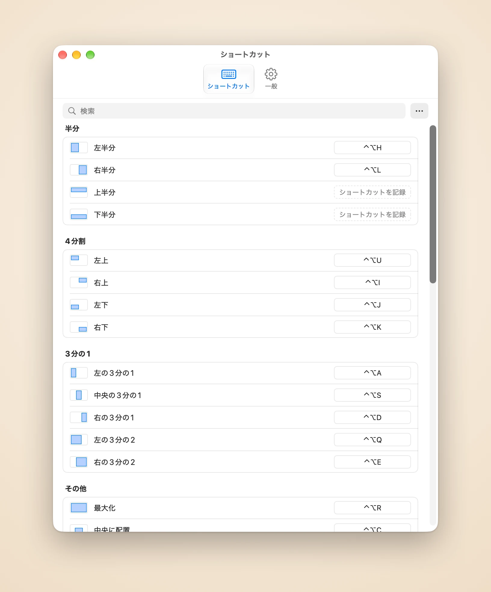

いま使っているウインドウを並べる
Piccoloは最近使ったウインドウを覚えています。ショートカット1つで、最新の2つ、3つ、6つのウインドウを現在のディスプレイに横並びやグリッドで配置。1つずつ選ぶ必要はありません。
Piccoloは最近使ったウインドウを覚えています。ショートカット1つで、最新の2つ、3つ、6つのウインドウを現在のディスプレイに横並びやグリッドで配置。1つずつ選ぶ必要はありません。
Piccoloがウインドウを並べたあとは、ショートカットでフォーカス中のウインドウ横の区切り線を動かすと、隣のウインドウも追従します。すき間も重なりもできません。ウインドウを入れ替えれば2つの位置を交換し、レイアウトはそのまま。
ショートカットを押し続けると、移動先がハイライトで表示されます。離せばそこへ移動、Escを押せば何も変わりません。
もう一度押すと2/3、さらに1/3
⌃⌥H ⌃⌥L
四隅それぞれに1キー
⌃⌥U ⌃⌥I ⌃⌥J ⌃⌥K
ワイド画面に3列
⌃⌥A ⌃⌥S ⌃⌥D
メインのウインドウを広く
⌃⌥Q ⌃⌥E
画面いっぱいに
⌃⌥R
サイズはそのまま中央へ
⌃⌥C
相対的なサイズと位置を維持
⌃⌥[ ⌃⌥] ⌃⌥⌘+矢印
画面の図に自分で描く
⌃⌥W
動かす前の位置に戻す
⌃⌥⌫
設定でアクションをクリックし、好きなキーを押すだけ。グリッドやカスタムエリアにも専用のショートカットを割り当てられ、上級者は設定ファイルを直接編集することもできます。

すべてのアクションを1つのリストに。行をクリックしてキーを押せば保存されます。⌘Zでどの変更も取り消せます。
ウインドウはなめらかに収まり、行き先がないときはやさしく跳ね返ります。速さは選べて、オフにもできます。
ウインドウがグリッドを埋めきらないとき、最後の1つを縦に伸ばすか横に伸ばすかを選べます。横長のディスプレイには列優先、縦置きには行優先。
ウインドウの間と画面の端にすき間を空けて、影が重なって黒い筋になるのを防ぎます。
English、简体中文、繁體中文、日本語、Français、Español、Português、Deutsch。
アカウント不要、解析なし。ネットに接続するのはライセンス確認とアップデート確認だけです。
リリース記念価格
US$4.99 買い切り・リリース期間後はUS$9.99
ご注文は販売事業者であるDodo Paymentsが処理し、決済、税金、請求書を扱います。
macOS 14以降と、アクセシビリティの許可です。PiccoloはmacOSのアクセシビリティAPIで他のAppのウインドウを動かすため、許可がないとウインドウは動きません。
PiccoloはmacOSのアクセシビリティAPIで他のAppのウインドウを移動・サイズ変更するため、許可がないとウインドウは動きません。ウインドウの位置とサイズの読み取りと変更にだけ使います。「システム設定」>「プライバシーとセキュリティ」>「アクセシビリティ」で許可できます。
それ以外のデータはMacの外に出ません。解析もクラッシュレポートもなし。ウインドウ、ショートカット、設定ファイルはすべてローカルに残ります。詳しくはプライバシーポリシー（英語）をご覧ください。
1ライセンスでMac 3台まで使えます。
空けたいMacで設定を開き、「一般」で「このMacを無効化」を選びます。その後、もう一方のMacでライセンスを有効化してください。
購入から30日以内なら理由を問わず返金できます。注文番号を添えてsupport@damao.ioまでメールしてください。詳しくは返金ポリシー（英語）をご覧ください。